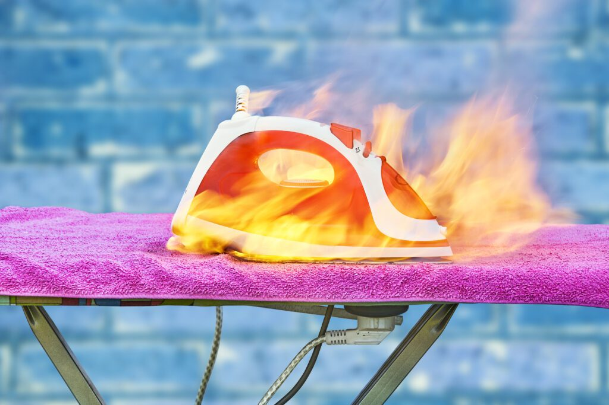

Estrategias para una Recuperación Integral y Segura tras Incendios en Madrid
La limpieza de incendios en la capital española, Madrid, representa un desafío multifacético que requiere atención minuciosa y experta. Más allá de limpiar la estructura física, este proceso implica salvaguardar la salud pública y preservar la seguridad de las áreas afectadas. En este artículo, se aborda de manera rigurosa el protocolo completo para la limpieza y limpieza después de incendios, resaltando la importancia de la intervención profesional, las técnicas avanzadas y la prevención.
Abordando la Limpieza de Incendios en Madrid
Los incendios no solo causan estragos en las edificaciones y propiedades, sino que también afectan profundamente la moral y la seguridad de una comunidad. La limpieza de incendios en Madrid es un proceso meticuloso que abarca desde la evaluación inicial de los daños hasta la limpieza completa de las áreas afectadas. Este proceso no solo tiene como objetivo principal devolver las propiedades a su estado original, sino también garantizar entornos seguros para sus habitantes.
Importancia de la Limpieza Post-Incendio
La limpieza tras un incendio es crucial por diversas razones. En primer lugar, ayuda a prevenir problemas de salud derivados de la inhalación de hollín y otras sustancias tóxicas liberadas durante el siniestro. Además, una limpieza eficaz es fundamental para facilitar la recuperación y limpieza de los espacios afectados, permitiendo que las actividades cotidianas se reanuden con prontitud.
Evaluación Integral de los Daños
Previo al inicio de cualquier actividad de limpieza, es imprescindible llevar a cabo una evaluación exhaustiva de los daños ocasionados por el incendio. Esto implica inspeccionar minuciosamente la estructura afectada para identificar áreas que requieran limpieza o reconstrucción, así como determinar el enfoque más adecuado para la limpieza y limpieza.
Estrategias Avanzadas de Limpieza y limpieza
La limpieza de incendios demanda un enfoque especializado que haga uso de técnicas y equipamientos avanzados. Desde la remoción de escombros hasta la limpieza profunda de hollín y la neutralización de olores persistentes, cada fase del proceso es crucial para una limpieza efectiva de la propiedad.
Desafíos y Consideraciones Especiales
La limpieza posterior a un incendio conlleva diversos desafíos, incluyendo la gestión de materiales contaminantes y la necesidad de abordar daños estructurales complejos. Estos aspectos subrayan la importancia de confiar en profesionales experimentados para llevar a cabo el proceso con éxito.
Profesionales y Servicios Especializados en Madrid
En Madrid, existen múltiples empresas especializadas en la limpieza y limpieza tras incendios. La elección de un servicio profesional garantiza que la limpieza se realice de manera segura y eficiente, cumpliendo con los estándares de la industria y las regulaciones locales vigentes.
Caso Práctico: Ejemplo de una Limpieza Exitosa Post-Incendio
Un estudio de caso emblemático ofrece una visión detallada sobre el proceso y los resultados de una limpieza de incendios exitosa en Madrid. Esto proporciona una comprensión más profunda sobre las estrategias empleadas y los beneficios de contar con la asistencia de expertos.
Prevención de Incendios: Una Prioridad Constante
Tan importante como la respuesta post-incendio es la prevención de futuros siniestros. Este apartado ofrece recomendaciones y estrategias para reducir el riesgo de incendios en entornos urbanos, enfatizando la importancia de la concientización y la preparación.
Impacto Ambiental y Consideraciones Legales
Los incendios no solo afectan a las estructuras y a las personas, sino también al medio ambiente circundante. Este segmento explora los efectos ambientales de los incendios y las medidas legales pertinentes para mitigar su impacto en los ecosistemas locales.
Aspectos Normativos y Legales
El conocimiento de la normativa local es crucial para llevar a cabo una limpieza de incendios conforme a las regulaciones vigentes. Esta sección detalla las normativas relevantes que afectan el proceso de limpieza y limpieza post-incendio en Madrid.
Consideraciones Especiales en Edificaciones Históricas
Los edificios históricos presentan desafíos únicos en la limpieza de incendios debido a su valor cultural y arquitectónico. Este apartado se centra en las técnicas y precauciones especiales necesarias para preservar estas estructuras durante el proceso de limpieza.
Innovación Tecnológica al Servicio de la limpieza
La tecnología desempeña un papel crucial en la mejora de los métodos de limpieza y limpieza post-incendio. Aquí se resaltan los avances recientes y los casos de éxito que demuestran el impacto positivo de la tecnología en este ámbito.

Apoyo Comunitario: Un Pilar Fundamental
La recuperación tras un incendio es un esfuerzo colectivo que requiere el apoyo tanto de la comunidad como de las autoridades locales. Esta sección aborda la importancia de los recursos comunitarios y gubernamentales en la asistencia a los afectados, fortaleciendo la resiliencia de la comunidad en su conjunto.
Reflexiones Finales
La limpieza de incendios en Madrid es un proceso complejo pero esencial para la recuperación y seguridad post-desastre. A través de la intervención profesional, la adopción de técnicas avanzadas y una sólida estrategia de prevención, es posible superar los desafíos que presentan estos eventos devastadores y mirar hacia un futuro más seguro y preparado.
Preguntas Frecuentes
- ¿Cuánto tiempo lleva el proceso de limpieza post-incendio?
- ¿Cuáles son las medidas inmediatas que deben tomarse después de un incendio?
- ¿Cómo se lleva a cabo la eliminación del hollín y el humo de las superficies afectadas?
- ¿Es seguro permanecer en una propiedad durante el proceso de limpieza?
- ¿Qué rol desempeñan los servicios profesionales en la recuperación post-incendio?
- ¿Qué medidas pueden tomarse para prevenir incendios en propiedades y comunidades?
Conclusión
La limpieza de incendios en Madrid no es únicamente una tarea estética, sino un paso fundamental hacia la recuperación integral y la seguridad de las comunidades afectadas. Al comprender los procesos involucrados, anticipar los desafíos y aprovechar los recursos disponibles, podemos abordar con éxito estos eventos desafortunados y avanzar hacia un futuro más resiliente y preparado.